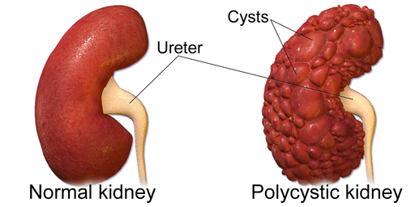
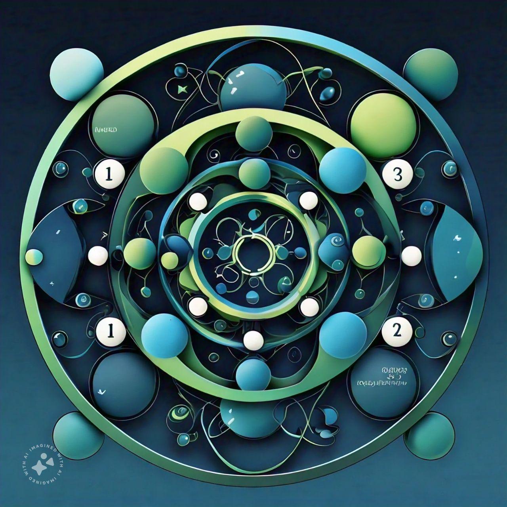

Scalable Bayesian inference
Bayesian models, distributed MCMC, and inference strategies for molecular biology and genomics.
Prospective PhD applicant in bioinformatics
I am Andrews Acheampong, an MPhil student in Biodata Analytics and Computational Genomics at Kwame Nkrumah University of Science and Technology. My research direction is bioinformatics method development, with particular interest in scalable Bayesian inference, distributed MCMC, and statistical genomics.
Research agenda
I want to continue into a PhD immediately after my MPhil and focus on developing methods for bioinformatics. I am especially interested in problems where model uncertainty, large biological datasets, and computational constraints meet.
Bayesian models, distributed MCMC, and inference strategies for molecular biology and genomics.
Computational approaches for gene-expression, omics, and high-dimensional biological data.
Python, R, Bash, Git, Flask, and biological data workflows that make analysis easier to inspect and extend.
Education
Kwame Nkrumah University of Science and Technology, Kumasi, Ghana
Coursework includes modern statistical methods, genomes and gene expression, advanced scientific and technical computing, mathematical modeling in biology, and biological database management.
Kwame Nkrumah University of Science and Technology, Kumasi, Ghana
CWA: 74.49/100. GPA equivalent: 3.82/4.00. Ranked in the top 5 percent of a graduating class of 240 students.
Selected research and code
Bioinformatics web application
A Flask application for FASTA sequence analysis, visualization, and rhinovirus classification, including phylogenetic analysis workflows.

Predictive modeling thesis
Logistic regression model for chronic kidney disease risk using hemoglobin, serum creatinine, hypertension, and random blood glucose.

Genomics training repository
Coursework and practical analyses around genomic datasets, strengthening the bridge between statistics, biological data, and reproducible computation.
Computational biology practice
Shell-based bioinformatics exercises focused on command-line workflows and biological data analysis foundations.
Research experience
Investigated hemoglobin, serum creatinine, hypertension, and random blood glucose as predictors of chronic kidney disease risk. Built and evaluated a logistic regression model with 10-fold cross-validation, reaching 97 percent accuracy and a Kappa value of 0.94.
Studied the relationship between study hours and Continuous Weighted Average using linear regression and correlation analysis, reporting both statistical significance and practical limits in predictive power.
Teaching and academic service
Department of Statistics and Actuarial Science, KNUST. Conducted tutorials in probability, prepared homework activities, and supported faculty research projects in data science and machine learning.
Developed and delivered practical R materials covering data manipulation, visualization, statistical analysis, and medical case studies.
Presentations
Keynote address for the Ghana Association of Statistics Students, KNUST.
Presentation to newly admitted lecturers in the Department of Statistics and Actuarial Science.
Hands-on workshop for graduate and research assistants on version control workflows.
Technical foundation
Python, R, SQL, JavaScript, HTML, CSS
Regression, machine learning, Bayesian inference, MCMC, cross-validation
Biopython, FASTA workflows, phylogenetic analysis, biological databases
Git, GitHub, Bash scripting, Conda, Flask, SQLite, Jupyter, R Markdown
Contact
I am looking for PhD environments where I can develop statistical and computational methods for biological data, contribute reproducible research software, and grow through interdisciplinary collaboration.